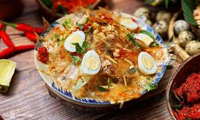

BANH TRANG TRON

Description
Ingredients
- 1 green mango, about 1 pound, shredded
- 4 oz rice paper, cut into thin strips
- 10 quail eggs, cooked
- 1 oz beef jerky
- 1 oz crispy tiny shrimp
- 1 teaspoon shrimp powder with chili
- 2 tbsps fried shallots
- 2 tbsps roasted peanuts
- 1/2 cup Vietnamese mint (rau ram)
Tamarind Sauce
- 2 oz tamarind paste
- 1/2 cup boiling water
- 2 tbsps fish sauce
- 2 tbsps sugar
- 1 bird's eye chili
Instructions
- To make the tamarind sauce, soak the tamarind paste in boiling water for 5 minutes breaking up any chunks with a spoon. Set aside until cool enough to handle. Pass the mixture through a sieve to get the tamarind water.
- Whisk 1/4 cup of tamarind water with fish sauce and sugar in a small bowl until well combined. Set aside the sauce.
- Cut the rice paper into strips with your kitchen shears between half to one inch wide.
- Peel mango and halve, then discard the seed. Cut the mango into strips about 3-5 inches in length and 1/8 of an inch thick using a mandoline or a very sharp knife and place the shredded mango in a bowl of ice cold water to keep it crisp.
- In a large bowl, combine rice paper strips, shredded mango, beef jerky, crispy tiny shrimp, quail eggs, and Vietnamese mint. Toss to combine. Drizzle some of the tamarind sauce over the salad and toss again until the rice papers have softened.
- Top the salad with shrimp powder, fried shallots, and roasted peanuts and serve immediately.
Back